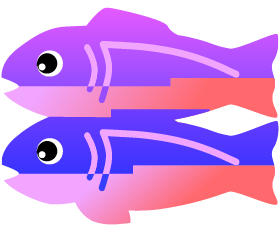

Teachable Machine
Train a computer to recognize your own images, sounds, & poses.
A fast, easy way to create machine learning models for your sites, apps, and more – no expertise or coding required.
